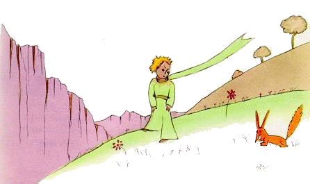
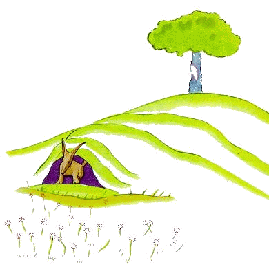
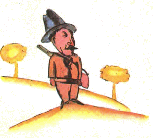

小王子 The Little Prince
第21章
第21章
就在这时狐狸出现了。
“早哇，”狐狸说。
“早，”小王子有礼貌地回答，他转过身来，却什么也没看到。
“我在这儿呢，”那声音说，“在苹果树下面……”
“你是谁？”小王子说，“你很漂亮。”
“我是一只狐狸，”狐狸说。
“来和我一起玩吧，”小王子提议，“我很不快活……”
“我不能和你一起玩，”狐狸说，“还没人驯养过我呢。”
“啊！对不起，”小王子说。
不过，他想了想又说：
“‘驯养’是什么意思？”
“你一定不是这儿的人，”狐狸说，“你来寻找什么呢？”
“我来找人，”小王子说。“‘驯养’是什么意思？”
“人哪，”狐狸说，“他们有枪，还打猎。讨厌极了！他们还养母鸡，这总算有点意思。你也找母鸡吗？”
“不找，”小王子说。“我找朋友。‘驯养’是什么意思？”
“这是一件经常被忽略的事情，”狐狸说。“意思是‘建立感情联系’……”
“建立感情联系？”
“当然，”狐狸说，“现在你对我来说，只不过是个小男孩，跟成千上万别的小男孩毫无两样。我不需要你。你也不需要我。我对你来说，也只不过是个狐狸，跟成千上万别的狐狸毫无两样。但是，你要是驯养了我，我俩就彼此都需要对方了。你对我来说是世界上独一无二的。我对你来说，也是世界上独一无二的……”
“我有点明白了，”小王子说，“有一朵花儿……我想她是驯养了我……”
“有可能，”狐狸说，“这个地球上各色各样的事都有……”
“哦！不是在地球上，”小王子说。
狐狸看上去很惊讶：
“在另一个星球上？”
“对。”
“在那个星球上有没有猎人呢？”
“没有。”
“哈，这很有意思！那么母鸡呢？”
“没有。”
“没有十全十美的事呵，”狐狸叹气说。
不过，狐狸很快又回到刚才的想法上来：
“我的生活很单调。我去捉鸡，人来捉我。母鸡全都长得一个模样，人也全都长得一个模样。所以我有点腻了。不过，要是你驯养我，我的生活就会变得充满阳光。我会辨认出一种和其他所有人都不同的脚步声。听见别的脚步声，我会往地底下钻，而你的脚步声，会像音乐一样，把我召唤到洞外。还有，你看！你看到那边的麦田了吗？我是不吃面包的。麦子对我来说毫无用处。我对麦田无动于衷。可悲就可悲在这儿！而你的头发是金黄色的。所以，一旦你驯养了我，事情就变得很美妙了！金黄色的麦子，会让我想起你。我会喜爱风儿吹拂麦浪的声音……”
狐狸停下来，久久地注视着小王子：
“请你……驯养我吧！”他说。
“我很愿意，”小王子回答说，“可是我时间不多了。我得去找朋友，还得去了解许多东西。”
“只有驯养过的东西，你才会了解它，”狐狸说，“人们也没有时间去了解任何东西。他们总到商店去购买现成的东西。但是不存在出售朋友的商店，所以人们也就不会有朋友。你如果想要有个朋友，就驯养我吧！”
“那么应当做些什么呢？”小王子说。
“应当很有耐心，”狐狸回答说，“你先坐在草地上，离我稍远一些，就像这样。我从眼角里瞅你，而你什么也别说。语言是误解的根源。不过，每天你都可以坐得离我稍稍近一些……”
第二天，小王子又来了。
“最好你能在同一时间来，”狐狸说，“比如说，下午四点钟吧，那么我在三点钟就会开始感到幸福了。时间越来越近，我就越来越幸福。到了四点钟，我会兴奋得坐立不安；幸福原来也很折磨人的！可要是你随便什么时候来，我就没法知道什么时候该准备好我的心情……还是得有个仪式。”
“什么叫仪式？”小王子问。
“这也是一件经常被忽略的事情，”狐狸说，“就是定下一个日子，使它不同于其他的日子，定下一个时间，使它不同于其他的时间。比如说，猎人有一种仪式。每星期四他们都和村里的姑娘跳舞。所以呢，星期四就是个美妙的日子！这一天我总要到葡萄地里去转悠转悠。要是猎人们随时跳舞，每天不就都一模一样，我不也就没有假期了吗？”
就这样，小王子驯养了狐狸。而后，眼看分手的时刻临近了：
“哎！”狐狸说，“……我要哭了。”
“这可是你的不是哟，”小王子说，“我本来没想让你受任何伤害，可你却要我驯养你……”
“可不是，”狐狸说。
“不过你要哭了！”小王子说。
“可不是，”狐狸说。
“结果你什么好处也没得到！”
“我得到了，”狐狸说，“是麦田的颜色给我的。”
他随即又说：
“你再去看看那些玫瑰花吧。你会明白你那朵玫瑰是世界上独一无二的。然后你再回来跟我告别，我要告诉你一个秘密作为临别礼物。”
小王子就去看那些玫瑰。
“你们根本不像我那朵玫瑰，你们还什么都不是呢，”他对她们说，“谁都没驯养过你们，你们也谁都没驯养过。你们就像狐狸以前一样。那时候的它，和成千上万别的狐狸毫无两样。可是我现在和它做了朋友，它在世界上就是独一无二的了。”
玫瑰们都很难为情。
“你们很美，但你们是空虚的，”小王子接着说，“没有人能为你们去死。当然，我那朵玫瑰在一个过路人眼里跟你们也一样。然而对于我来说，单单她这一朵，就比你们全体都重要得多。因为我给浇过水的是她，我给盖过罩子的是她，我给遮过风障的是她，我给除过毛虫的（只把两三条要变成蝴蝶的留下）也是她。我听她抱怨和自诩，有时也和她默默相对。她，是我的玫瑰。”
说完，他又回到狐狸跟前：
“再见了……”他说。
“再见，”狐狸说，“我告诉你那个秘密，它很简单：只有用心才能看见。本质的东西用眼是看不见的。”
“本质的东西用眼是看不见的，”小王子重复了一遍，他要记住这句话。
“正是你为你的玫瑰花费的时光，才使你的玫瑰变得如此重要。”
“正是我为我的玫瑰花费的时光，才使我的玫瑰变得如此重要，”小王子说，他要记住这句话。
“人们已经忘记了这个道理，”狐狸说。“但你不该忘记它。对你驯养过的东西，你永远负有责任。你必须对你的玫瑰负责……”
“我必须对我的玫瑰负责……”小王子重复一遍，他要记住这句话。